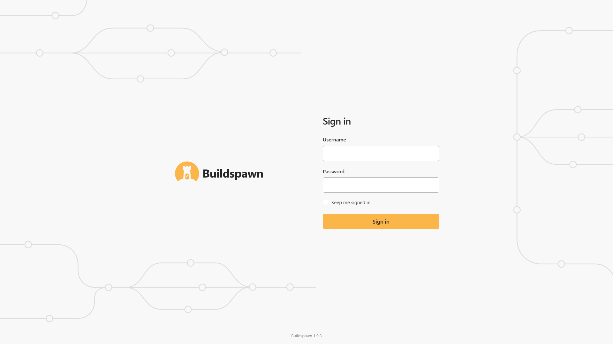

First start and sign-in
Open Buildspawn for the first time, create the admin user and sign in.
Open the server in your browser
When the server runs, open its address in a web browser. On the server itself that is:
http://localhost:8080/From another computer, use the server's name or IP address instead of localhost, for example http://build-server:8080/.
- In the terminal program's live monitor, press b to open the page.
- In the Windows app, use the link shown on the Run here tab.
8080 is the default port. If you chose another port during setup, use that one. You can change it later with buildspawn set port=8090 --apply.
Create the admin user
On the very first start the page asks for the initial admin password. It is a one-time password that proves you own the server.
- Find the password. Any of these shows it:
- the Admin password step of the terminal program's launch flow (v shows it, c copies it);
- the command
buildspawn admin-password(add--copyto put it on the clipboard; on the Linux packages, run it withsudo); - the file
secrets/initialAdminPasswordinside the server's home folder.
- Paste the password into the page and continue.
- Create your own administrator account: user name, password, full name and e-mail address.
- Confirm the server's address. Buildspawn uses it in links, for example in e-mails.
When setup is done, the one-time password stops working and the file is removed. From now on you sign in with your own account.
Create more users under Settings › Users, and give them rights under Settings › Security. See Users, groups and permissions.
Sign in
Next time you open Buildspawn, it shows the sign-in page: the logo on the left and the form on the right. It follows the theme you chose, or your system's light or dark setting when you have not chosen one.

- Type your Username and Password.
- Tick Keep me signed in if you use your own computer, so you don't have to sign in every day.
- Click Sign in. Buildspawn opens the Projects page.
To sign out, open your account menu (the round button with your initial, top right) and choose Sign out.
To change your password or create an API token for scripts, open the account menu and choose Security, or go to http://<server>:8080/me/security.
Keep the admin account for administration. Give everyday users their own accounts with fewer rights, so one shared password never unlocks everything.
What to do next
- Open Settings and check System. The server address you confirmed is used in links and e-mails. If you serve Buildspawn under a path such as
https://build.example.com/buildspawn/, set the address to match and start the server with--prefix=/buildspawn. - If your company uses its own certificate authority, add its root under Settings › Security › Trusted certificates. The certificates are kept when you upgrade.
- Add a build machine: Agents › Install agents. See Install an agent. For a first try you can use the built-in agent, which runs small builds on the server itself.
- Create your first project and build configuration with New Item. See Create a build configuration.
- Press Run and watch the build. See The Run dialog and The build page.
User names may contain dots, for example sam.lee.